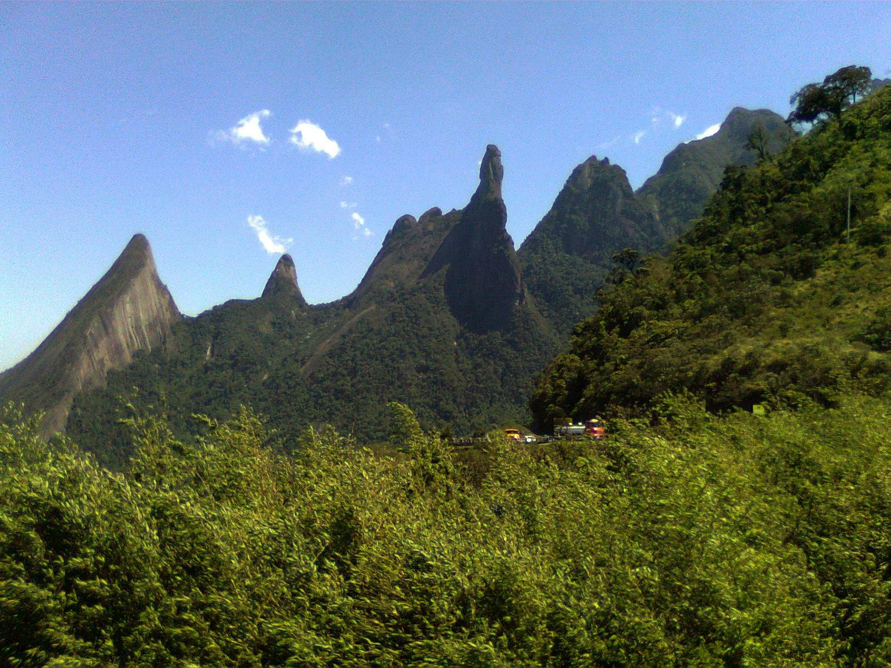
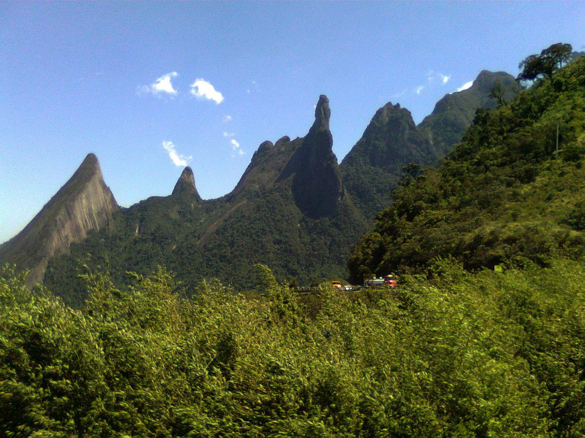

Aqui no PARQUE NACIONAL DA SERRA DOS ORGÃOS você se encontra em um local repleto de natureza
Muitos tons de verde, diferentes tipos de aves, plantas e arvores!
Criado em 30 de novembro de 1939, o PARNASO é o terceiro parque mais antigo do país, representando um importante marco na história das Unidades de Conservação Brasileiras.
É um dos melhores locais do país para a prática de esportes de montanha, como escalada, caminhada, rapel e outros; além de ter fantásticas cachoeiras. O Parque tem a maior rede de trilhas do Brasil. São mais de 200 quilômetros de trilhas em todos os níveis de dificuldade: desde a trilha suspensa, acessível até a cadeirantes, até a pesada Travessia Petrópolis-Teresópolis, com 30 Km de subidas e descidas pela parte alta das montanhas.